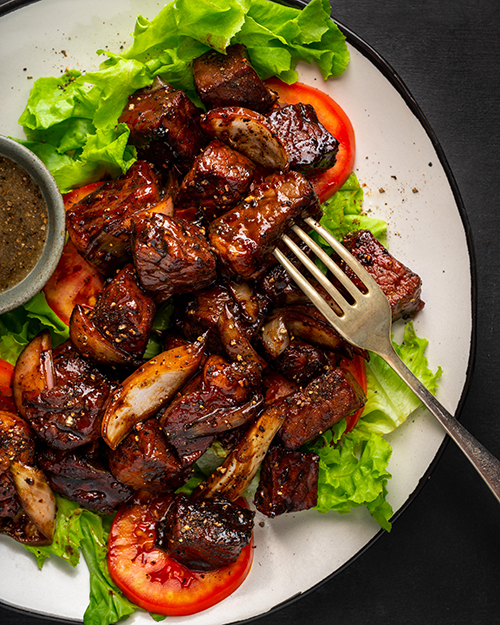

Beef Loc Lac

Beef Loc Lac: Traditional dish from Cambodia
Shaking beef or Bo luc lac, is originally a Vietnamese dish. In Cambodia we serve Lok Lak with one fried egg on top, and lime pepper sauce for dipping.
Ingredients
- 2 lbs (900 gram) of good beef cube to bite size, marinate with 4 tablespoon of oyster sauce
- 2 tablespoon of sugar
- 2 tablespoon of fish sauce
- 4 tablespoon of minced garlic
- 2 tablespoon of thick soy sauce (dragon brand)
- 1 teaspoon of black pepper
- Romaine lettuce
- tomato (sliced)
- 1 green onion for garnish or cilantro
- Lime Pepper dressing
Steps
- Marinate the meat with the above ingredients for at least 2 hours to give flavor to the meat
- When ready to cook heat 2 T of oil in a fry pan until hot then add marinated beef cook until the meat no longer pink to medium rare or well done up to you.
- Turn the heat off and let the meat rest for 5 minutes before put it on the bed of lettuce and sliced tomato.
- Garnish with cilantro or green onion.
- Serve with rice. Share and enjoy!
Home